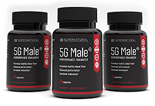

5G Male Scam or Legit? The Shocking Truth Exposed (2026 Review)

Click Here to Check Official Batch Availability →| Product Name: | 5G Male |
| Editorial Score: | 4.8 / 5.0 ⭐⭐⭐⭐⭐ |
| Primary Purpose: | Targeted Bioactive Health & Vitality Formula (Natural Health & Dietary Supplement) |
| Manufacturing / Delivery: | c-GMP Certified, FDA-Registered Facility (USA) |
| Guarantee Shield: | 100% Risk-Free Money-Back Guarantee |
| Availability: | Official Manufacturer Site Only |
5G Male Reviews – Is it efficient? Experts Advice
5G Male is a male enhancement supplement designed for men that claims to maximize erection, stamina, and libido. It works irrespective of the age of the adult.
Most of the 5G Male reviews have been majorly positive, with an average rating of 4.7/5.
What is 5G Male?
5G Male is a dietary supplement formulated to enhance male health. It consists of active components that originated in Vietnam. This supplement is essential for men because it helps maximize their stamina and energy.
It also helps keep your blood circulation in check. A confidence maximize and an enhanced life are aftereffects of using this potent supplement. 5G Male has been designed for men, keeping their distinct physical needs in mind.
The 5 active components in 5G Male start with the letter ‘G’, hence the unique name. 5G Male helps keep your arteries healthy and maintains efficient nitric oxide levels. It’s a mood-enhancing, blood pressure-regulating supplement that grants long-term health benefits.
This supplement is 100% natural and free of low-quality, toxic substances. The active components are pure and obtained through trusted sources.
5G Male has been sufficiently tested and created only after extensive research. Since the active components are natural, the supplement has no side effects.
Multiple packages of 5G Male are available, each at highly discounted prices. It is a smart purchase as you save a lot of money. 5G Male is also backed by a great money-back guarantee, making your purchase secure.
Since 5G Male identifies the root of health issues and strives to destroy them, it is a much more efficient supplement than others.
How Does 5G Male Work?
5G Male is an efficient supplement with five magical active components that tackle multiple health issues. It is packed with flavonoids, which are essential for the promotion of efficient blood flow.
It contains antioxidants that are beneficial for multiple reasons. Their major roles are eliminating toxins from your blood vessels and increasing the speed of muscle relaxation. This will help ensure that your blood circulation is optimum.
Nitric oxide is an efficient vasodilator. It helps the blood vessels expand to facilitate a smooth blood flow. 5G Male helps raise nitric oxide levels.
This supplement also helps with the production of dopamine which helps improve your mood as it is a ‘happy hormone’. The supplement works because the proportion of each ingredient added to the formula is accurate. This ratio factor is essential for the success of a supplement.
Men across the globe, belonging to varied age groups, have used the supplement and have acquired great health benefits. Most men also have unhealthy lifestyles, do not engage in regular workouts, or do not have good diets.
Even for such men, 5G Male is beneficial. 5G Male is all that is needed to undo years of damage.
5G Male Ingredients
5G Male has 5 essential active components that provide several health benefits. Following is a complete list of these potent natural active components:
Vietnamese Garlic
The compound allicin in this ingredient is important because it helps improve your blood flow. It ensures this by keeping your blood vessels and arteries in good health.
Plaque buildup in the arteries is a major reason for inefficient blood flow, and Vietnamese garlic helps eliminate this issue and prevents its reoccurrence.
This ingredient also helps improve your immunity as it possesses antibacterial, anti-inflammatory, and antioxidant properties.
Ginseng
The great anti-inflammatory properties of this ingredient are essential to overcome multiple health conditions. Regarding enhancing brain functioning, ginseng is often a top pick. It is also essential for overcoming fatigue.
It can help manage typical health issues like high blood sugar levels and can also handle symptoms of major health conditions like cancer. It is packed with antioxidants and can, therefore, improve your immunity. It also gives your energy levels a maximize.
Ginkgo Leaves
They act as vasodilators and help improve blood flow. It is packed with flavonoids and terpenoids, which have antioxidant properties that help increase blood flow. Another blood flow-improving task is performed by ginkgo leaves, increasing nitric oxide production.
Ginger
Ginger is an incredible blood flow-enhancing ingredient linked to multiple other benefits. It is an efficient agent for controlling blood pressure levels and is a critical vasodilator. It can also attain good weight loss results or manage cholesterol levels.
Green Tea
The compound EGCG is found in green tea. This compound helps provide strength to your blood vessels and also helps maximize nitric oxide levels. Green tea has antioxidant properties that help prevent problems like muscle fibrosis. It helps enhance cognition, improves mood, and amplifies metabolism.
Pros
- It is a 100% natural supplement.
- It is safe for most individuals as it has no side effects.
- It has been designed especially for men, prioritizing their needs.
- All the ingredients are high-quality and extensively tested.
- It helps enhance blood circulation and helps increase energy levels.
- Several package options are available to choose from.
- It is backed by a 100% money-back guarantee.
- It works faster and better than most male enhancement supplements.
- It helps enhance overall health and well-being.
Cons
- 5G Male can only be purchased through the official website.
- Exceeding the recommended dosage may have side effects.
- It can only be used by men.
- It may not be suitable for children.
- If you are allergic to any ingredient, it may not suit you.
- You must consult your doctor before using the supplement if you have a preexisting medical condition.
- It must be consumed regularly to attain good results.
How to use it?
One bottle of 5G Male is a 30-day supply. Each bottle comprises 30 capsules. The manufacturers recommend using one capsule daily, preferably with a glass of water.
The duration it takes for the supplement to provide benefits varies from person to person. For some, the effects may be visible within a few days, but for most customers, using 5G Male for 3 to 6 months will provide ideal results. The capsules are easy to swallow and do not have a bad odor or aftertaste.
Any Side Effects?
For most customers, 5G Male has worked perfectly. No side effects have been reported. Before purchasing the supplement, you must ensure it is the best option.
The supplement is not likely suitable for customers with medical conditions. If you are allergic to any ingredient in it, either check with your doctor or avoid using the supplement altogether. Try to adhere to the dosage instructions, as overconsumption can also be problematic.
Pricing
Three packages of 5G Male are available. Each of these options is great as discounts are available for all. Following are the options that you can choose from:
- One bottle is a 30-day supply, and it is worth $69.95. You get 1 free bottle!
- Three bottles are a 90-day supply and are worth $179. You get three free bottles!
- Six bottles are a 180-day supply and are worth $297. You get six extra bottles!
Each of these packages is not only available at low prices but also helps you get your hands on additional bottles. The bigger the size of the package the higher the advantage. The three and six-bottle packages are therefore ideal.
Refund policy
You may refrain from purchasing the supplement because you fear it may not work. But 5G Male is completely risk-free, health-wise and money-wise.
5G Male is backed by a 90-day, 100% money-back guarantee. So, if you feel the supplement has not been working effectively, you can get a complete refund within 90 days of your purchase.
Some instructions regarding the refund policy must be kept in mind to prevent miscommunication later. So, make sure you read about the policy through the official website before you order the supplement.
Shipping
In the US, the one-bottle package has a small shipping fee. However, free shipping is available if you order the three- or six-bottle packages. Shipping costs and product availability depend on your location.
Additional taxes like VAT or GST may also be charged in some countries. Choose your package and fill in the details to check the exact shipping costs. A detailed order summary with all the charges will then be visible.
Conclusion
Overall, most of the 5G Male reviews are positive, with a 4.7/5 from 12,786 ratings, and it supports the credibility of this efficient male enhancement formula.
5G Male is a highly efficient supplement that has provided magical health benefits to customers worldwide. These customers have nothing but good things to say about 5G Male.
If you are a man who has suffered from health issues and has also lost your confidence, this may be the right choice for you. Since bad lifestyle choices are so common, using a supplement with active components as potent as the ones in 5G Male is not an option but a necessity.
Only men prioritizing their health and looking forward to positive change purchase 5G Male. Be like these men before it is too late for change.
Complete your purchase till the discounts are available and before the supplement goes out of stock.
Frequently Asked Questions
Is 5G Male a safe supplement?
5G Male is a 100% natural supplement packed with essential active components. The active components in the supplement have been added only after extensive testing.
They are obtained through the best, high-quality sources, and their purity is guaranteed. 5G Male is, therefore, safer than any other male enhancement supplement available today.
What health benefits does 5G Male provide?
The list of benefits for this supplement is extensive as it is formulated to provide complete protection. Some core benefits of using the supplement are improved blood circulation, enhanced health of arteries, efficient control over blood pressure levels, and an increase in nitric oxide levels. By increasing the production of the happy hormone dopamine, 5G Male also helps brighten your mood.
A good mood and improved health will also help improve your self-esteem and confidence. Last but not least, 5G Male helps improve your energy levels and maximize your stamina.
What if 5G Male does not work for me?
5G Male works for almost all customers who try it. If it does not work for you, you need not worry. 5G Male has a 90-day money-back guarantee. Any customer is eligible for this policy if the 90-day condition is considered.
Is 5G Male affordable?
5G Male can be purchased at great prices. Multiple package options are available, and each of these is at discounted prices. Considering the incredibly high-quality active components and the years of hard work that has gone into making 5G Male, the prices are quite low.
There are so many male enhancement supplements that are ineffective, and even then, they are available at much higher rates. Plus, each package is accompanied by extra bottles, making the purchase a steal! Purchase the supplement now so that you avoid price hikes that are likely to occur in the future.